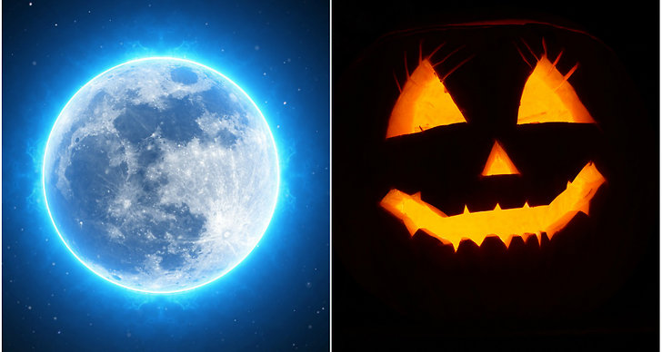

Halloween är en högtid som händer på den 31 Oktober och den dagen så klär man sig kläder som ser läskiga ut och dekorerar huset lite grann
När det är halloween brukar de flesta barn och några äldre ungdomar går ut och besöker deras grannar, knackar på dörren och frågar dom buss eller godis. Om de säger bus så gör leker man lite med grannarna, med de händer sällan. Om de säger godis så ger dom ut godisen dom har hemma till dom som knackade.
Halloween kom till Sverige från USA och började uppmärksammas ordentligt i början av 1990-talet. Till USA kom halloween med irländska invandrare på 1800-talet. Ursprungligen härstammar halloween från den keltiska helgen Samhain då de dödas själar ansågs återvända till jorden. Människorna klädde ut sig och gick och tiggde mat och dryck till festen. Ljusprydda pumpor sattes ut för att mota bort ondskan.
